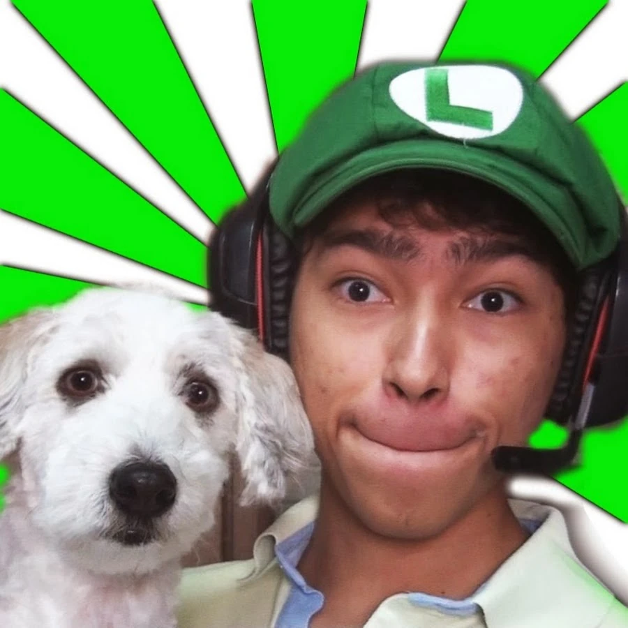
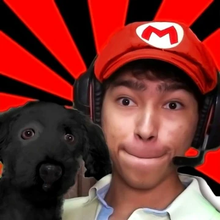

16-Float
Pushes the element to either the left or right side.
Float Left

Luis Fernando Flores Alvarado, mejor conocido en el mundo digital como **Fernanfloo**, es uno de los creadores de contenido más icónicos de habla hispana. Nació el 7 de julio de 1993 en San Salvador, El Salvador.
Aquí tienes los puntos clave de su trayectoria:
* **Inicios y Auge:** Comenzó su canal de YouTube en 2011. Se catapultó a la fama mundial gracias a su estilo frenético, su edición dinámica y sus reacciones exageradas al jugar videojuegos (gameplays), especialmente con títulos como *Geometry Dash*, *GTA V* y juegos de terror independientes.
* **Identidad Visual:** Es fácilmente reconocido por su uso del color verde, su gorra de Luigi y su carismática mascota, un perro llamado **Curly**. Su frase "¡Carajo!" se convirtió en un sello distintivo entre sus seguidores.
* **Hitos:** Fue el primer creador de contenido de El Salvador en recibir el Botón de Diamante de YouTube. Su éxito fue tan masivo que lanzó su propio videojuego móvil (*Fernanfloo*) y una novela gráfica titulada *Curly está en peligro*.
* **Retiro Parcial:** En 2018, en la cima de su carrera, decidió alejarse de la frecuencia diaria de YouTube debido al agotamiento y la presión, manteniendo desde entonces una presencia más relajada en redes sociales y realizando directos ocasionales en plataformas como Twitch.
Con más de **47 millones de suscriptores** en YouTube, Fernanfloo permanece como una figura legendaria de la "vieja escuela" de internet, siendo respetado por las nuevas generaciones de streamers por su autenticidad y el impacto que tuvo en la cultura del entretenimiento digital.
Float Right

**Antifloo** es el "alter ego" o la contraparte malvada de Fernanfloo, un personaje creado por el propio Luis Fernando que se convirtió en una pieza clave del lore de su canal.
Aquí tienes los detalles principales de este personaje:
* **Origen y Apariencia:** Surgió en los videos de Fernanfloo como una versión oscura y opuesta. Mientras que Fernan suele usar el color verde (por Luigi), Antifloo se identifica con el **color rojo** y, a menudo, aparece con una edición visual distorsionada, voz alterada y una actitud mucho más agresiva o siniestra.
* **Personalidad:** A diferencia del Fernanfloo alegre y bromista, Antifloo es representado como un ser lleno de odio y resentimiento que busca "destruir" al canal o atormentar al Fernan original. Es el villano clásico dentro de sus sketches de comedia y terror.
* **Impacto en la audiencia:** El personaje fue extremadamente popular durante la época dorada de los "Creepypastas" en YouTube. Muchos fans crearon teorías conspirativas y fanfics sobre el origen de este personaje, alimentando la narrativa de que era una entidad real que vivía dentro de la computadora del YouTuber.
* **Legado:** Aunque es un personaje ficticio utilizado para el entretenimiento, Antifloo simboliza una era de YouTube donde los grandes creadores experimentaban con narrativas propias y personajes secundarios para darle variedad a sus gameplays.
A pesar de ser el "villano", es recordado con mucho cariño por la comunidad como uno de los elementos que hacía que el contenido de Fernanfloo fuera único y emocionante.
Float con Múltiples Elementos
A mayo de 2026, la vida y carrera de Fernanfloo han dado giros importantes, marcando un regreso más activo a las plataformas digitales, pero con un enfoque distinto al de sus inicios.
Aquí tienes los detalles más relevantes de su actualidad:
1. Actividad en Contenido (2025-2026)
Tras años de relativa inactividad, Fernanfloo ha retomado la creación de videos con mayor frecuencia en YouTube y Twitch. Recientemente, ha publicado contenido de:
Gameplays Clásicos y Modernos: Ha vuelto a títulos que marcaron su canal como Happy Wheels (con episodios en 2025) y PUBG, además de colaborar en directos de Mobile Legends y Clash Royale.
Colaboraciones: Participó en dinámicas con otros creadores de renombre, como un viaje para jugar contra MrBeast y colaboraciones con MissaSinfonia.
2. Hitos Personales y Familiares
Uno de los cambios más comentados por su comunidad ha sido la evolución de su vida personal:
Su Esposa: En sus videos de 2026, Fernan menciona y muestra contenido junto a su pareja, refiriéndose a ella como su esposa (por ejemplo, en videos de Mobile Legends a principios de año).
Pérdida de Curly: En mayo de 2025, Fernanfloo compartió la triste noticia del fallecimiento de su icónico perro, Curly, un evento que conmovió profundamente a sus seguidores de toda la vida.
3. Presencia en Eventos
Fernanfloo ha salido de su "retiro" para participar en grandes eventos de la comunidad hispana. Se ha reportado su regreso al ring en eventos organizados por Ibai Llanos, manteniendo su estatus como una de las leyendas vivientes del entretenimiento en español.
4. Cifras Actuales
Suscriptores: Superó la barrera de los 50.4 millones de suscriptores en YouTube en mayo de 2026.
Impacto: A pesar de no subir videos diariamente como en 2015, sus publicaciones alcanzan millones de vistas en cuestión de días, demostrando que su "ejército" sigue siendo uno de los más fieles de internet.
Nota: Aunque ha vuelto a los directos y videos, Fernanfloo prioriza ahora su salud mental y bienestar personal, manejando su canal bajo sus propios términos y sin la presión de los algoritmos de antaño.